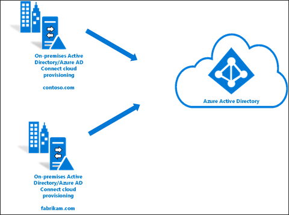
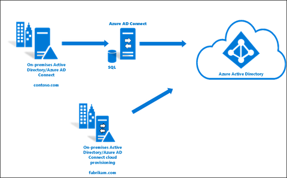
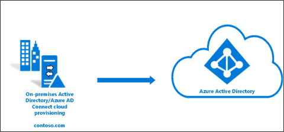
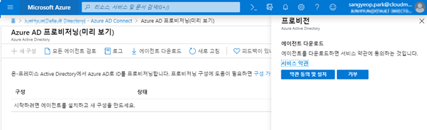
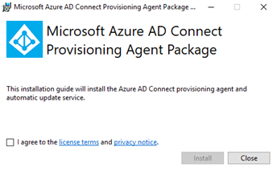
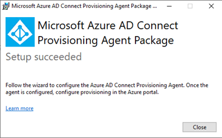
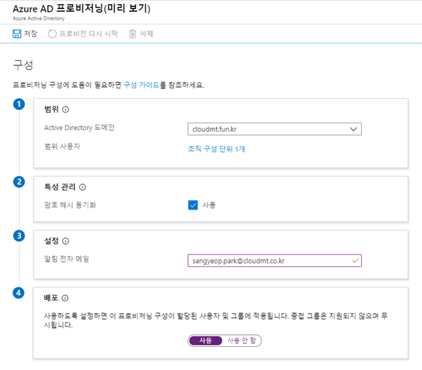

Azure AD Cloud Provisioning은 Azure AD에 대 한 사용자, 그룹 및 연락처의 동기화를 위해 하이브리드 id 목표를 충족 하 고 달성 하기 위해 설계 된 새로운 Microsoft 에이전트입니다.
• Azure AD Sync의 경우 온프레미스의 AD에서 Azure AD로의 단일 포리스트를 지원했었지만, Azure AD Cloud Provisioning은 다중 온프레미스 AD를 추가할 수 있습니다.
• 에이전트가 간소화되어, 프로비저닝 작업 및 설치에 대한 부담이 줄었습니다. 이제 동기화 작업 수행은 Azure AD에서 실행할 수 있습니다.
• 프로비전 에이전트의 고가용성 배포가 간소화됩니다.
Azure AD Cloud Provisioning을 위한 에이전트 설치는 다음의 조건을 충족해야 합니다.
Azure AD Cloud Provisioning 필수 설치 요소
하나 이상의 도메인과 단일 Azure AD간의 프로비저닝

Azure AD Connect를 이용하고 있을 경우, 다른 도메인을 동일한
Azure AD에 연결하여 프로비저닝

단일 도메인에서 단일 Azure AD 간의 프로비저닝

Azure AD Connect provisioning을 다운로드 및 로그를 확인하기 위해서는, 다음의 메뉴에서 확인 가능합니다.
Azure Portal » Azure Active Directory » Azure AD Connect 
사용자는 에이전트를 다운로드하여 설치 후 On-Premise AD 인증과 Azure AD 인증을 거친 후 설치가 시작됩니다.
| 설치 전 | 설치 후 |
|---|---|
|  |  |
설치가 완료된 후 Azure AD 프로비저닝 구성이 완료되면, 기존의 On-Premise 에서 시작하던 동기화에 대한 작업의 관리를 Azure Portal에서 진행되며, 동기화 작업에 대한 로그 또한 Azure Portal에서 확인할 수 있습니다.

-
범위
- Active Directory에서 Azure AD로 프로비저닝할 대상을 정의합니다. 도메인, AD 그룹 또는 AD 조직 구성 단위별로 범위를 정의할 수 있습니다.(On-Premise 도메인과 Azure AD 도메인이 같을 경우 동일한 도메인으로 사용자가 생성되지만, 도메인이 다를 경우 example.onmicrosoft.com 형태의 기본 Azure AD 도메인으로 사용자가 생성됩니다.)
-
특성 관리
- Active Directory에서 Azure AD로 암호 해시를 동기화해야 하는지 여부를 정의합니다. 이는 동기화 설정이며, 인증에 암호 해시를 사용해야 하는지 여부를 정의하지 않습니다.
-
설정
- 프로비저닝이 정상이 아닌 경우 알림을 받을 메일 주소를 정의합니다.
-
배포
- 구성과 테스트가 완료되면 구성을 사용하도록 설정합니다. 그러면 2분마다 프로비저닝이 실행됩니다. (2분 단위의 프로비저닝은 변경할 수 없습니다.)